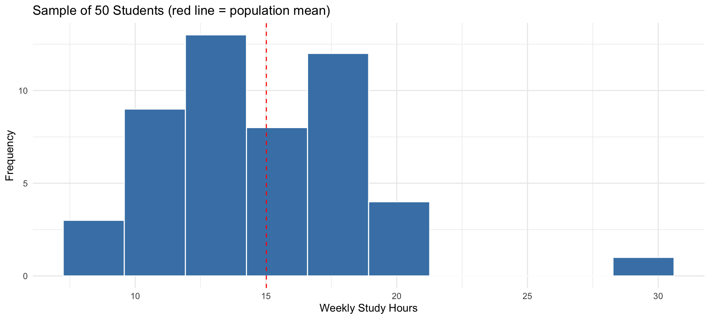
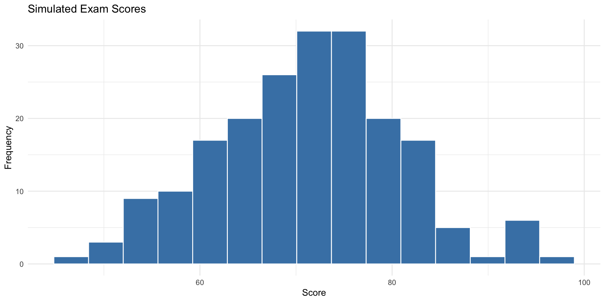

Population mean (parameter) Sample mean (statistic)
15.01470 14.81155 Statistics
Chapter 1: The Nature of Probability and Statistics
Yu-You Liou
Shih Chien University
2026-08-03
Overview
Chapter 1 introduces the fundamental nature of statistics — what statistics is, the kinds of data it works with, how data are collected, and how statistical results can be used or misused.
| Section | Topics |
|---|---|
| 1-1 | Descriptive and inferential statistics |
| 1-2 | Variables and types of data |
| 1-3 | Data collection and sampling techniques |
| 1-4 | Observational and experimental studies |
| 1-5 | Uses and misuses of statistics |
| 1-6 | Computers and statistical software |
Section 1-1: Descriptive and Inferential Statistics
What Is Statistics?
Statistics appears everywhere — sports records, opinion polls, medical findings, unemployment rates, weather forecasts. All of these begin with data: values that have been collected and must be organized before they can tell us anything.
Statistics
Statistics is the science of conducting studies to collect, organize, summarize, analyze, and draw conclusions from data.
Three reasons to study statistics:
- To read and interpret studies, charts, and statistical claims in everyday life and in your field.
- To conduct research — design studies, analyze data, and communicate results correctly.
- To become a better consumer and citizen — able to recognize when numbers inform and when they mislead.
Basic Vocabulary
Variables and Data
- A variable is a characteristic or attribute that can assume different values.
- Data are the values (measurements or observations) that variables assume.
- A collection of data values forms a data set; each individual value is a data value (or datum).
- Variables whose values are determined by chance are called random variables.
For instance, “blood type” is a variable; the observed values A, B, AB, O recorded from 25 inductees are the data; the entire list of 25 values is the data set.
Populations and Samples
In most studies it is impractical — sometimes impossible — to examine every subject of interest. Researchers therefore study a subgroup and generalize from it.
Population and Sample
- A population consists of all subjects (human or otherwise) that are being studied.
- A sample is a subgroup of the population, selected to represent it.
Representativeness
Conclusions drawn from a sample are trustworthy only if the sample is representative of the population — ideally obtained by a chance (random) method. How to obtain such samples is the subject of Section 1-3.
The Two Branches of Statistics
Descriptive Statistics
Descriptive statistics consists of the collection, organization, summarization, and presentation of data. It describes the situation as it is — averages, percentages, tables, and graphs computed from data actually observed.
Inferential Statistics
Inferential statistics consists of generalizing from samples to populations, performing estimations and hypothesis tests, determining relationships among variables, and making predictions.
Probability and Hypothesis Testing
Inferential statistics rests on probability theory.
- Probability is the chance that a particular event will occur — the mathematical language of uncertainty (Chapter 4).
- Hypothesis testing is a decision-making process for evaluating claims about a population, based on information obtained from a sample (Chapter 8).
Inferential statistics also studies relationships between variables (e.g., is smoking related to lung cancer?) and makes predictions (e.g., forecasting election results from a poll). Because samples never contain complete information, every inferential conclusion carries some uncertainty — which probability quantifies.
Example 1-1
Descriptive or Inferential?
Determine whether each statement is an example of descriptive or inferential statistics.
- The average jackpot of the five largest lottery payouts was $367 million.
- By 2040, the world population is projected to exceed 9 billion.
- A medical study suggests that drinking one cup of coffee daily may lower the risk of heart disease.
- Last semester, 12% of the students in this course received a grade of A.
- Based on a poll of 1,200 voters, candidate Lin is predicted to win 54% of the vote.
Example 1-1
Solution
Solve
| Statement | Branch | Reason |
|---|---|---|
| 1 | Descriptive | Summarizes data actually observed (an average) |
| 2 | Inferential | A prediction about a future, unobserved value |
| 3 | Inferential | Generalizes from a study sample to all people |
| 4 | Descriptive | Reports a percentage computed from complete records |
| 5 | Inferential | Uses a sample (1,200 voters) to estimate a population value |
Interpretation
Whenever a number merely summarizes observed data, it is descriptive. Whenever it goes beyond the data — predicting, generalizing, or testing a claim — it is inferential.
Example 1-2
Population, Sample, and Inference in R
A university has 10,000 students. We wish to know the average weekly study hours of all students (the population), but we can only survey 50 of them (a sample). Simulate this situation in R and compare the sample mean with the population mean.
Example 1-2
Solution
Solve
Example 1-2
Solution
The sample mean (a statistic) is close to, but not exactly equal to, the population mean (a parameter). Using the statistic to draw a conclusion about the parameter is the essence of inferential statistics.
ggplot(data.frame(hours = my_sample), aes(x = hours)) +
geom_histogram(bins = 10, fill = "steelblue", color = "white") +
geom_vline(xintercept = mean(population), linetype = "dashed", color = "red") +
labs(title = "Sample of 50 Students (red line = population mean)",
x = "Weekly Study Hours", y = "Frequency") +
theme_minimal()
Section 1-2: Variables and Types of Data
Classifying Variables
Variables are classified in two complementary ways: by how they are measured (qualitative vs. quantitative) and, for quantitative variables, by the values they can assume (discrete vs. continuous).
| Qualitative | Categories: gender, blood type, religious preference, geographic location |
| Quantitative — Discrete | Countable values: number of children, calls received, students in a class |
| Quantitative — Continuous | Measured values: height, weight, temperature, time |
Qualitative and Quantitative Variables
Qualitative Variables
Qualitative variables can be placed into distinct categories according to some characteristic or attribute. They are non-numeric in nature (even if coded with numbers, like ZIP codes).
Quantitative Variables
Quantitative variables are numerical and can be ordered or ranked. Arithmetic operations (averaging, differencing) are meaningful for them.
A useful test: does the average of the values make sense? The average of heights does; the “average” of ZIP codes does not — ZIP code is qualitative despite its digits.
Discrete and Continuous Variables
Discrete Variables
Discrete variables assume values that can be counted — a finite number of values, or a countable sequence (0, 1, 2, 3, …). Examples: number of phone calls received, number of children in a family.
Continuous Variables
Continuous variables can assume infinitely many values between any two specific values. They are obtained by measuring and often include fractions and decimals. Examples: temperature, height, weight, time.
Example 1-3
Classify Each Variable
Classify each variable as qualitative or quantitative. If quantitative, further classify it as discrete or continuous.
- The number of text messages a student sends in one day
- The amount of water in a 2-liter bottle
- A student’s blood type
- The time it takes to run 100 meters
- The number of cars passing a toll booth per hour
- The color of cars in a parking lot
Example 1-3
Solution
Solve
| Variable | Type | Subtype |
|---|---|---|
| 1. Text messages per day | Quantitative | Discrete (countable) |
| 2. Water in a bottle | Quantitative | Continuous (measured) |
| 3. Blood type | Qualitative | — |
| 4. Time to run 100 m | Quantitative | Continuous (measured) |
| 5. Cars per hour | Quantitative | Discrete (countable) |
| 6. Car color | Qualitative | — |
Interpretation
Ask two questions in order: Is it numeric with meaningful arithmetic? If not, it is qualitative. If yes, is it counted or measured? Counted → discrete; measured → continuous.
Boundaries of Continuous Variables
Because measuring devices have limited precision, continuous data must be rounded. A recorded value therefore represents an interval of true values.
Boundary Rule
A recorded value’s boundaries extend one-half unit below and above the recorded value, in the same units:
\text{Boundaries} = \text{recorded value} \pm \tfrac{1}{2}\,(\text{measurement unit})
| Recorded value | Measured to nearest | Boundaries |
|---|---|---|
| 86 ^\circF | degree | 85.5 – 86.5 ^\circF |
| 15 ml | ml | 14.5 – 15.5 ml |
| 1.6 kg | tenth of kg | 1.55 – 1.65 kg |
| 3.18 s | hundredth of s | 3.175 – 3.185 s |
Example 1-4
Finding Class Boundaries
Find the boundaries of each measured value.
- A patient’s temperature, recorded as 38.6 ^\circC (nearest tenth of a degree)
- A package’s weight, recorded as 12 kg (nearest kg)
- A sprint time, recorded as 9.58 s (nearest hundredth of a second)
Example 1-4
Solution
Solve
| Recorded | Unit | Lower | Upper |
|---|---|---|---|
| 38.60 | 0.10 | 38.550 | 38.650 |
| 12.00 | 1.00 | 11.500 | 12.500 |
| 9.58 | 0.01 | 9.575 | 9.585 |
Interpretation
Each recorded value actually stands for the interval between its boundaries. Boundaries are essential when constructing grouped frequency distributions in Chapter 2.
The Four Levels of Measurement
In addition to being classified by type, variables are classified by how much information their values carry.
Measurement Scales
- Nominal — mutually exclusive, unordered categories (gender, ZIP code, eye color).
- Ordinal — categories that can be ranked, but differences between ranks are not meaningful (letter grades, judges’ rankings, S/M/L).
- Interval — ordered with meaningful, equal differences, but no true zero (temperature in ^\circF or ^\circC, IQ scores).
- Ratio — interval properties plus a true zero, so ratios are meaningful (height, weight, salary, time).
The Four Levels Compared
| Level | Order? | Equal differences? | True zero? | Examples |
|---|---|---|---|---|
| Nominal | No | No | No | Blood type, nationality |
| Ordinal | Yes | No | No | Grade (A–F), satisfaction rating |
| Interval | Yes | Yes | No | Temperature (^\circC), IQ |
| Ratio | Yes | Yes | Yes | Height, weight, income |
A temperature of 0 ^\circC does not mean “no heat” — so 40 ^\circC is not “twice as hot” as 20 ^\circC (interval). But a weight of 0 kg means no weight, and 40 kg is twice 20 kg (ratio).
Example 1-5
Classify the Level of Measurement
Classify each variable according to its level of measurement.
- Jersey numbers of basketball players
- Rankings of tennis players (1st, 2nd, 3rd, …)
- SAT scores
- Weights of newborn babies
- Course evaluation responses: poor / fair / good / excellent
- Body temperatures in ^\circC
Example 1-5
Solution
Solve
| Variable | Level | Reason |
|---|---|---|
| 1. Jersey numbers | Nominal | Numbers are labels only |
| 2. Tennis rankings | Ordinal | Order matters; gaps not meaningful |
| 3. SAT scores | Interval | Equal differences; no true zero |
| 4. Newborn weights | Ratio | True zero exists; ratios meaningful |
| 5. Evaluation responses | Ordinal | Ranked categories |
| 6. Temperatures (^\circC) | Interval | 0 ^\circC is not “no temperature” |
Interpretation
The level of measurement determines which statistical methods are legitimate — e.g., computing a mean requires at least interval data.
Levels of Measurement in R
R distinguishes these levels through data types:
Factor w/ 4 levels "A","AB","B","O": 1 4 3 2 Ord.factor w/ 4 levels "poor"<"fair"<..: 1 3 4 num [1:3] 36.5 37 38.2Nominal data become unordered factors, ordinal data become ordered factors, and interval/ratio data are stored as numeric.
Section 1-3: Data Collection and Sampling Techniques
How Are Data Collected?
Data come from many sources: surveys, records (existing files and databases), direct observation, and experiments. Surveys are the most common, and are conducted in three main ways:
| Survey method | Advantages | Disadvantages |
|---|---|---|
| Telephone | Inexpensive; respondents more candid | Excludes those without phones; tone of voice may influence answers |
| Mailed questionnaire | Wide geographic coverage; anonymity | Low response rates; questions may be misunderstood |
| Personal interview | In-depth responses | Costly; interviewer bias possible |
Data can also be obtained by surveying records or by direct observation of situations.
Why Sample?
Studying an entire population (a census) is usually impossible or impractical:
- Populations are often too large to enumerate.
- Testing may be destructive (crash-testing every car leaves no cars).
- Resources — time, money, personnel — are limited.
To make valid inferences, samples should be unbiased — chosen by a chance method. Four basic methods follow; each is illustrated with R using a roster of 500 students.
Random Sampling
Random Sample
A random sample is selected so that every member of the population has an equal chance of being chosen — typically using random numbers.
[1] 324 167 129 418 471 299 270 466 187 307Historically this was done with random number tables; today software generates the random numbers.
Systematic Sampling
Systematic Sample
A systematic sample numbers the population 1 to N, picks a random starting point, then selects every kth subject, where k \approx N/n.
[1] 33 83 133 183 233 283 333 383 433 483Caution: if the population list has a periodic pattern that matches k, the sample can be badly biased.
Stratified Sampling
Stratified Sample
A stratified sample divides the population into strata (groups sharing a characteristic), then samples randomly within each stratum. This guarantees every subgroup is represented.
# A tibble: 10 × 2
# Groups: college [5]
id college
<int> <chr>
1 85 Business
2 21 Business
3 254 Culture
4 274 Culture
5 107 Design
6 173 Design
7 379 Management
8 385 Management
9 437 Media
10 489 Media Cluster Sampling
Cluster Sample
A cluster sample divides the population into existing clusters (sections, blocks, schools), randomly selects whole clusters, and uses all members of the chosen clusters.
[1] 14 5
5 14
20 20 Clusters are convenient and cheap, but members of a cluster tend to resemble one another, which can reduce representativeness.
Other Sampling Methods
Convenience Sample
A convenience sample uses subjects that are readily available — shoppers at one mall, volunteers responding online. Results may be acceptable if the group is representative, but convenience samples are often biased.
| Method | Key idea | Main risk |
|---|---|---|
| Random | Equal chance for all | Requires full population list |
| Systematic | Every kth subject | Hidden periodic patterns |
| Stratified | Random within subgroups | Must know strata in advance |
| Cluster | All members of chosen clusters | Clusters may be homogeneous |
| Convenience | Whoever is available | Bias |
Example 1-6
Identify the Sampling Method
State which sampling method was used in each scenario.
- Out of 10 hospitals in a city, 3 are chosen at random, and all nurses in those hospitals are surveyed.
- A quality engineer tests every 100th bottle coming off a production line.
- A pollster uses a random number generator to pick 1,000 phone numbers from all listed numbers.
- A university surveys 50 freshmen, 50 sophomores, 50 juniors, and 50 seniors, each chosen at random within their class.
- A reporter interviews people walking past the station entrance.
Example 1-6
Solution
Solve
| Scenario | Method | Clue |
|---|---|---|
| 1 | Cluster | Whole hospitals selected; everyone inside surveyed |
| 2 | Systematic | Every 100th item |
| 3 | Random | Random numbers; equal chance |
| 4 | Stratified | Random selection within each class level |
| 5 | Convenience | Whoever happens to pass by |
Interpretation
The decisive questions are: Were groups or individuals selected? Was chance used? Was selection done within subgroups or of whole subgroups?
Section 1-4: Observational and Experimental Studies
Observational Studies
Observational Study
In an observational study, the researcher merely observes what is happening or what has happened, and draws conclusions — without intervening or assigning treatments.
Advantages: occurs in a natural setting; can use existing records; can study variables that would be unethical or impossible to assign (smoking, natural disasters).
Disadvantages: cannot establish cause and effect; exposed to confounding variables; recorded data may contain errors.
Experimental Studies
Experimental Study
In an experimental study, the researcher manipulates one variable (the treatment) and measures its effect on another, ideally with subjects randomly assigned to groups.
Key Vocabulary
- Independent (explanatory) variable — the variable the researcher manipulates.
- Dependent (outcome) variable — the variable measured as the result.
- Treatment group — receives the treatment; control group — does not (may receive a placebo).
Random assignment makes the groups comparable, so differences in the outcome can be attributed to the treatment — experiments can establish causation.
Confounding and Other Effects
Confounding Variable
A confounding variable influences the dependent variable but cannot be separated from the independent variable. Example: if exercisers also change their diets, diet confounds the effect of exercise on weight loss.
Two famous behavioral effects:
- Placebo effect — subjects improve merely because they believe they are being treated. Remedy: give the control group an inert placebo.
- Hawthorne effect — subjects change behavior simply because they know they are being studied (first documented at the Hawthorne plant, 1924–1932).
Example 1-7
Observational or Experimental?
For each study, decide whether it is observational or experimental. If experimental, identify the independent and dependent variables.
- Researchers compare lung cancer rates between people who smoke and people who do not.
- Subjects are randomly assigned to drink either 0, 1, or 2 cups of coffee, and reaction times are then measured.
- A sociologist examines census records to study how household size changed from 1990 to 2020.
- Patients are randomly given a new drug or a placebo, and blood pressure is recorded after 8 weeks.
Example 1-7
Solution
Solve
| Study | Type | Independent var. | Dependent var. |
|---|---|---|---|
| 1 | Observational | — (smoking not assigned) | — |
| 2 | Experimental | Cups of coffee | Reaction time |
| 3 | Observational | — (existing records) | — |
| 4 | Experimental | Drug vs. placebo | Blood pressure |
Interpretation
The decisive question is whether the researcher assigned the values of the explanatory variable. Assignment (with randomization) → experimental; mere observation → observational.
Random Assignment in R
Randomly assigning 20 subjects to treatment and control groups:
| Group | Subjects |
|---|---|
| Treatment | 1, 2, 4, 5, 7, 8, 10, 17, 18, 20 |
| Control | 3, 6, 9, 11, 12, 13, 14, 15, 16, 19 |
Randomization balances both the variables we can see and the ones we cannot, which is what makes causal conclusions possible.
Section 1-5: Uses and Misuses of Statistics
Statistics Can Mislead
Almost all statistical misuse falls into a small number of patterns. Knowing them protects you both as a reader and as a producer of statistics:
- Suspect samples
- Ambiguous averages
- Changing the subject
- Detached statistics
- Implied connections
- Misleading graphs
- Faulty survey questions
Suspect Samples and Ambiguous Averages
Suspect samples. Was the sample large enough? Was it chosen by chance? “Three out of four doctors surveyed recommend brand X” — if only four doctors were surveyed, or if they volunteered, the claim is worthless.
Ambiguous averages. Four different statistics — mean, median, mode, midrange — can each be loosely called the “average” (Chapter 3). A writer can pick whichever number flatters the argument. Income reports commonly quote the mean (pulled up by a few very high earners) when the median tells a humbler story.
Changing the Subject and Detached Statistics
Changing the subject. The same facts, different numbers: a politician says spending increased “only 3%”; an opponent says it increased “by $6,000,000.” Both may be true — percentages and absolute values create very different impressions.
Detached statistics. A comparison with no baseline: “This pain reliever works four times faster.” Four times faster than what? A claim with no stated reference point cannot be evaluated.
Implied Connections and Faulty Questions
Implied connections. Hedge words smuggle in causation: “Eating fish may help reduce your cholesterol.” “May help” guarantees nothing, but readers remember “fish reduces cholesterol.”
Faulty survey questions. Small wording changes flip results:
- “Do you favor cutting wasteful government programs?” vs.
- “Do you favor cutting programs such as health care and education?”
Question order, loaded words, and social desirability all bias self-reported answers.
Example 1-8
Misleading Graphs
Two cola brands have market shares of 45% (Brand A) and 47% (Brand B) — a difference of only 2 percentage points. Draw the same data twice: once with a truncated vertical axis and once with a proper axis starting at zero. Compare the impressions given.
Example 1-8
Solution
Solve — the misleading version
Example 1-8
Example 1-8
Solution
Interpretation
Both graphs plot exactly the same numbers, yet the truncated axis makes Brand B’s 2-point lead look like total dominance. When reading graphs, always check:
- Does the value axis start at zero?
- Are the axis units evenly spaced?
- Are picture symbols scaled by area/volume rather than height (a common exaggeration trick)?
Section 1-6: Computers and Statistical Software
The Role of Computers
Statistical computation that once required hours with a hand calculator and printed tables is now instantaneous. Common tools include graphing calculators, Excel, MINITAB, SPSS — and R, the language used throughout this course.
The Machine Does Not Think
Software only performs the calculations it is asked to perform. The user must still choose the correct method, check its assumptions, and interpret the output. A computer will happily compute a meaningless average of ZIP codes.
A First Look at R
Everything in this course — tables, graphs, simulations, tests — is produced with short R scripts like this one:
A First Look at R

Summary
| Concept | Key idea |
|---|---|
| Descriptive statistics | Collecting, organizing, summarizing, presenting data |
| Inferential statistics | Generalizing from samples to populations |
| Population vs. sample | All subjects vs. a representative subgroup |
| Qualitative vs. quantitative | Categories vs. meaningful numbers |
| Discrete vs. continuous | Counted vs. measured values |
| Concept | Key idea |
|---|---|
| Measurement levels | Nominal, ordinal, interval, ratio |
| Sampling methods | Random, systematic, stratified, cluster (and convenience) |
| Observational vs. experimental | Observe only vs. manipulate and randomize |
| Misuses of statistics | Suspect samples, ambiguous averages, misleading graphs, … |
Key Distinctions
Important Distinctions
\text{Boundaries} = \text{recorded value} \pm \tfrac{1}{2}\,(\text{measurement unit})
- Descriptive summarizes what was observed; inferential generalizes beyond it.
- A parameter describes a population; a statistic describes a sample.
- Interval scales lack a true zero; ratio scales have one.
- Only experiments (with random assignment) can establish cause and effect.
Key Takeaways
Key point
- Statistics — the science of collecting, organizing, summarizing, analyzing, and drawing conclusions from data
- Variable / data / data set — a characteristic, its observed values, and their collection
- Population / sample — all subjects of interest vs. the subgroup actually studied
- Descriptive vs. inferential — describing data vs. generalizing from samples
- Qualitative / quantitative; discrete / continuous — the two-step classification of variables
- Nominal / ordinal / interval / ratio — the four levels of measurement
- Random / systematic / stratified / cluster — the four basic chance sampling methods
- Observational vs. experimental — only randomized experiments support causal claims
- Misuses — suspect samples, ambiguous averages, detached statistics, misleading graphs
Acknowledgement
Copyright notice. These teaching materials have been adapted from Bluman, A. G. (2012). Elementary statistics: A step by step approach (8th ed.). McGraw-Hill. All rights are reserved by the original authors and publishers.
Non-commercial use only. These materials are strictly intended for educational purposes and must not be used for commercial gain or profit.
Proper attribution. Any reproduction, distribution, or use of these materials must provide proper attribution to the original source.

Elementary Statistics: A Step by Step Approach